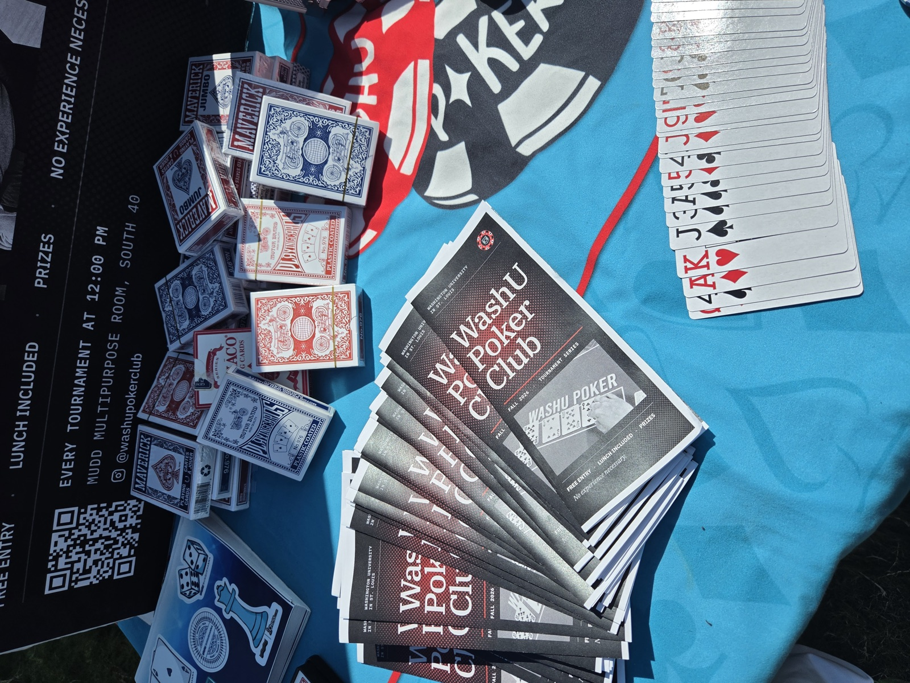
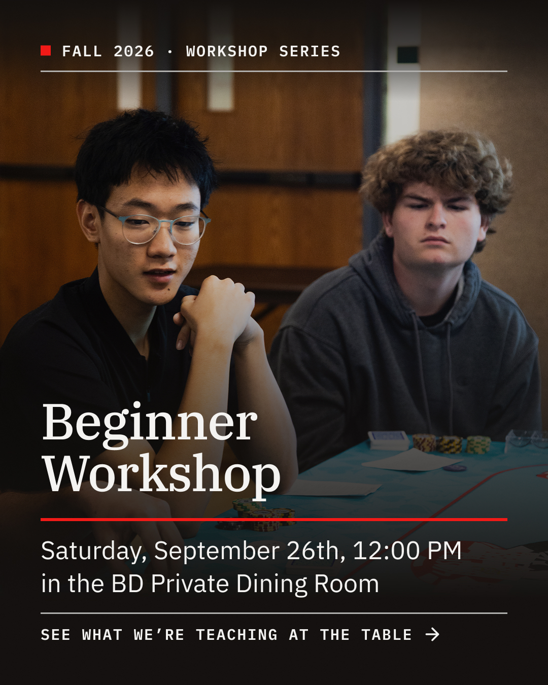
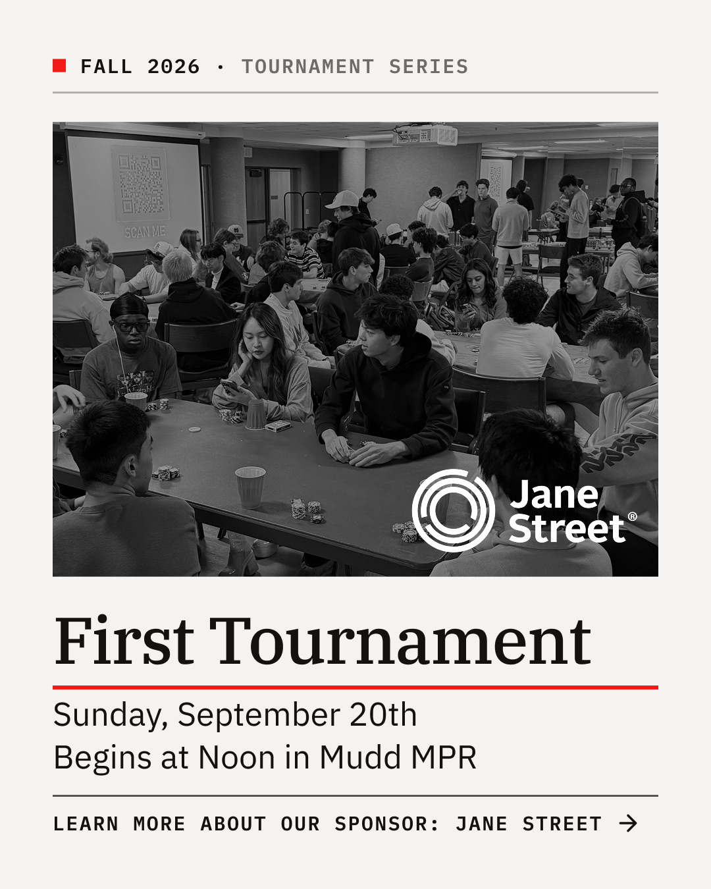
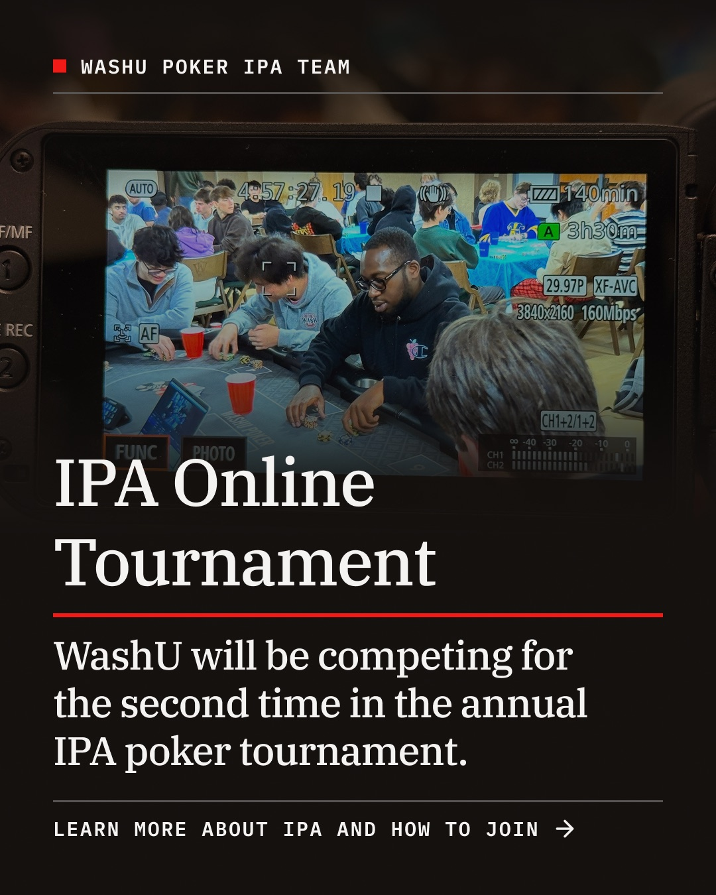
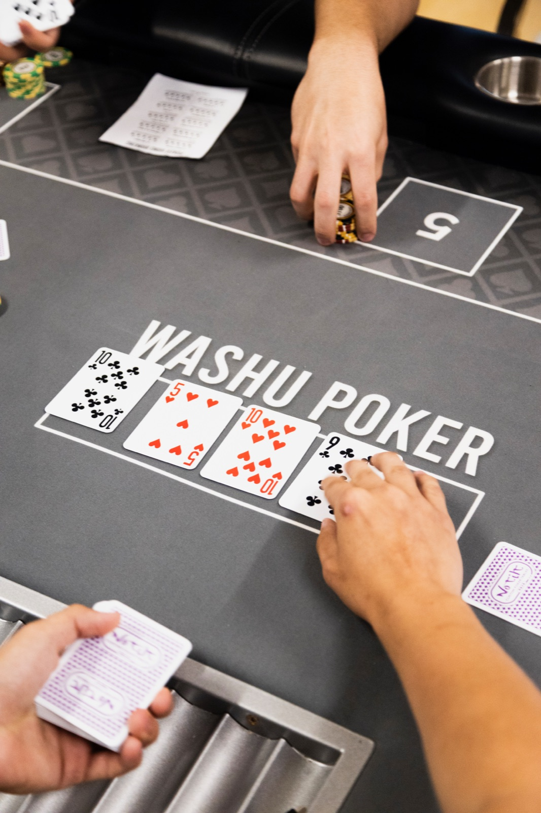
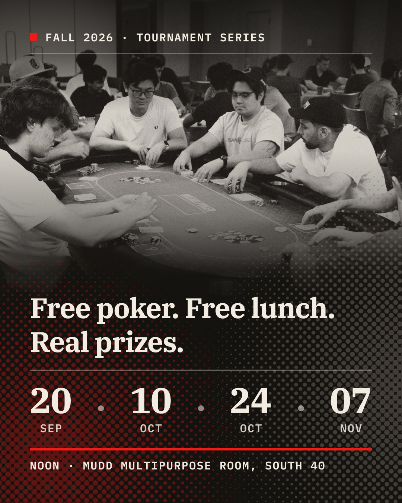
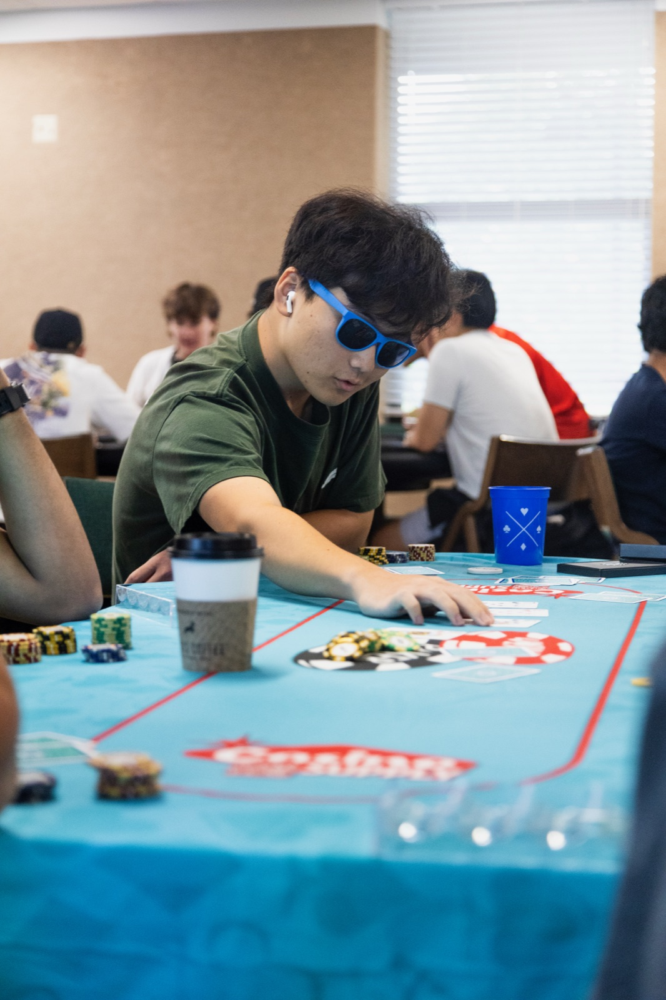
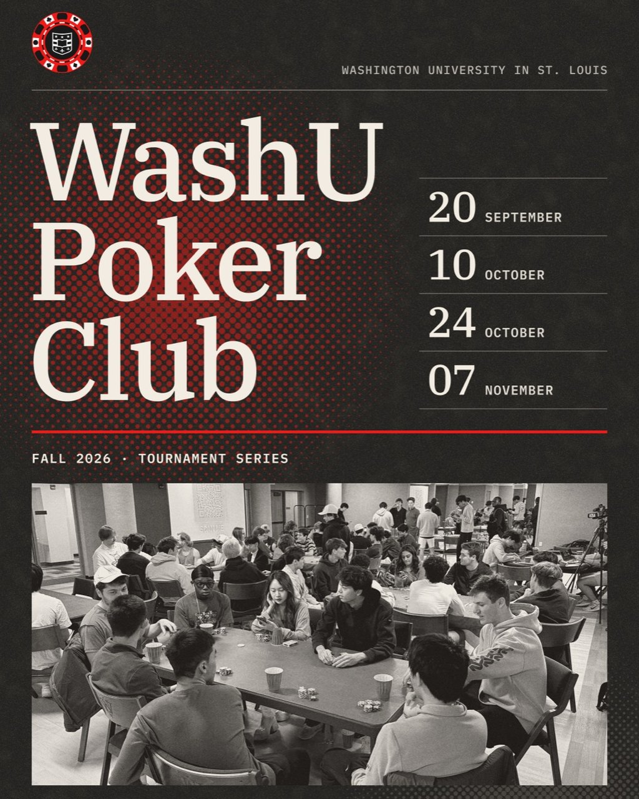
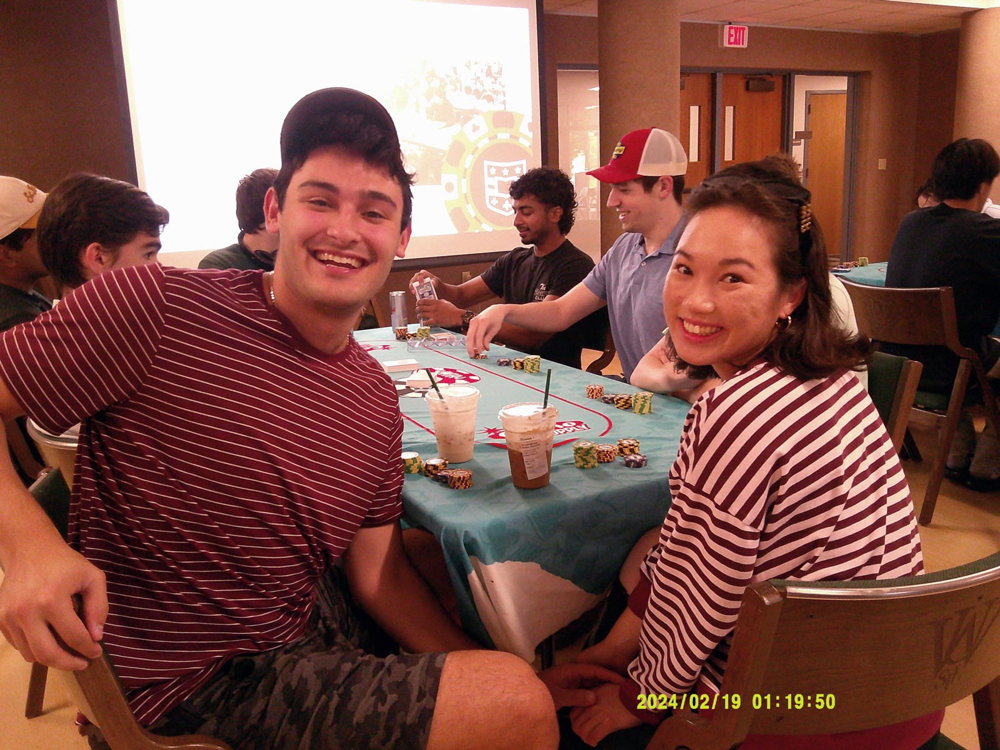
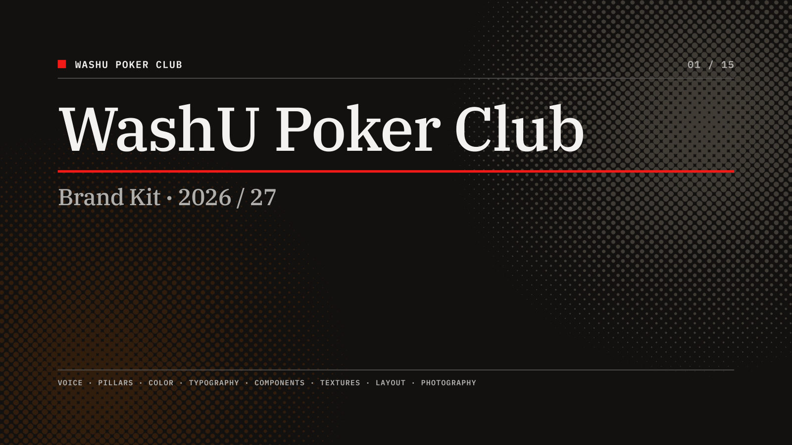

WashU Poker Club
- Visual Marketing
- Social Media Design
- Art Direction
WashU Poker Club is a student-run organization that hosts monthly tournaments open to all students and a competitive Intercollegiate Poker Association team. As Head of Marketing, I built a visual identity and communications system that brings consistency to the club’s events, social media, and promotional materials and gives it a recognizable presence on campus.



The Brief
The club had a name and a meeting space but no cohesive identity. As its tournaments and competitive team grew, it needed a system that could announce events clearly, welcome new students, and present the club professionally to sponsors, while staying practical for a student organization whose leadership changes every year.





The System
I built a visual language on a limited palette, bold typography, halftone photography, and recurring graphic treatments. The tournament series runs on an ink background with a red accent, so dates and sponsors can change without a redesign. I carried it through Instagram, original event photography, print, and a brand guide that future boards can use without rebuilding anything.
Impact
Tournament attendance doubled and Instagram engagement rose 40%, while custom pitch decks secured more than $10,000 in sponsorships, expanding prize pools and production value. Documented and repeatable, the system gives the club a consistent presence across events, sponsors, and leadership changes from one academic year to the next.
